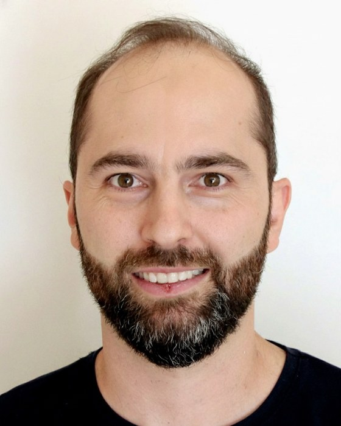

Bioinformática
Análise de sequências e ômicas, fluxos de trabalho reprodutíveis e apoio computacional à pesquisa de laboratório.
Professor · IFPR – Campus Cascavel
Professor de Computação no IFPR e doutor em Bioinformática. Transformo desafios de dados, otimização e automação em soluções digitais robustas, com pesquisa aplicada e inteligência artificial.

Sou professor de Computação no IFPR – Campus Cascavel, com graduação em Ciência da Computação e doutorado em Bioinformática. Tenho mais de 15 anos de experiência em engenharia de software, bancos de dados e desenvolvimento de sistemas críticos.
Meu foco é transformar desafios reais em soluções digitais robustas, aplicando computação avançada, como inteligência artificial, para gerar valor e impacto que se possam medir.
No IFPR – Campus Cascavel desenvolvemos projetos de P&D&I sob medida para empresas, cooperativas e órgãos públicos. A parceria com o Instituto oferece um modelo de execução ágil, focado em resultados, e reúne professores, pesquisadores e estudantes altamente qualificados em projetos de alto impacto, com rapidez e customização.
Se a sua organização tem um desafio de otimização, dados ou automação que exige expertise técnica de alto nível, vamos conversar para mapear a melhor solução digital.
Análise de sequências e ômicas, fluxos de trabalho reprodutíveis e apoio computacional à pesquisa de laboratório.
Engenharia de software, bancos de dados e pipelines para sistemas críticos, com dados rastreáveis, de qualidade e prontos para análise e IA.
Projetos de P&D&I sob medida com empresas, cooperativas e órgãos públicos, envolvendo estudantes, professores e pesquisadores.